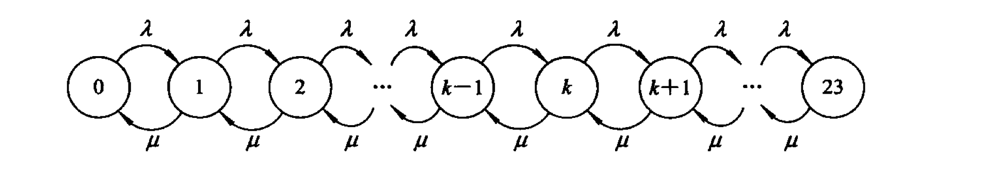
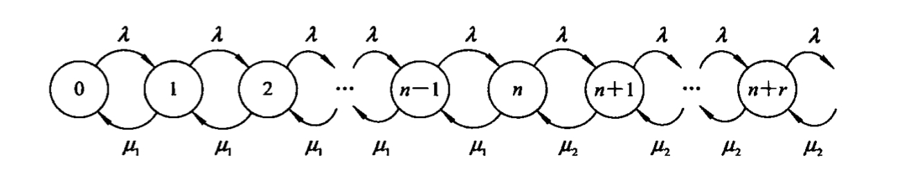
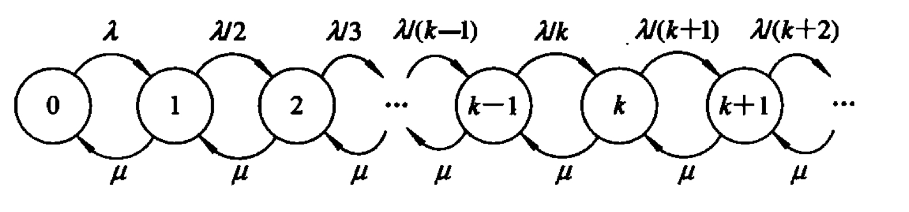
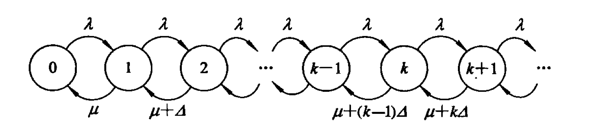
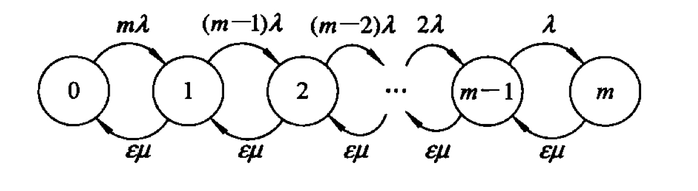
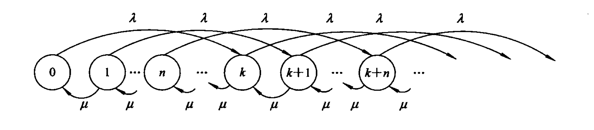
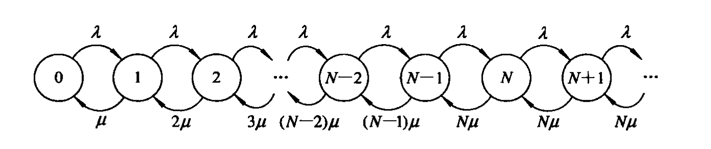

2024年6月18日13时至15时，我将要参加课程《随机过程与排队论》的期末考试。幸而在一周前任课老师给了一些指导，稍微有了些复习方向；这里写的是复习期间的笔记。
课本使用的是西安电子科技大学出版社出版的《排队现象的建模、解析与模拟》（ISBN号码为978-7-5606-2678）。
随机过程（第一章）
定义
定义在给定概率空间上的一族随机变量{X(t),t∈T}即随机过程。其中，参数集T是实数集R的一个子集；当t取遍T中的每一个值时均有一个随机变量X(t)与之对应。
Markov性（无后效性／无记忆性）
用公式表达就是
P(X(t)≤x∣X(t0)≤x0,X(t1)≤x1,…,X(tn)≤xn)=P(X(t)≤x∣X(tn)≤xn)
这个式子的含义是“对随机过程X(t),t∈T，若对任意参数t0<t1<⋯<tn，在X(t0),X(t1),…,X(tn)对应值已知的情况下X(t)的条件分布仅和X(tn)的状态有关”。在我的理解里，这句话可以理解成“X(t)的条件分布只和最后一刻的状态相关”。
现在考虑两种典型概率分布的无记忆性。
几何分布的无记忆性
几何分布指的是在n次Bernoulli实验中试验k次才得到第一次成功的概率。换言之，若某事件在1次实验中成功的概率是p，那么当成功总试验次数ζ满足
P(ζ=k)=p(1−p)k
恒成立时，ζ符合几何分布，也记为ζ∼GE(p)。
现在，考虑如何证明几何分布的无记忆性。
可以考虑符合几何分布的如下实际问题：
一男子在赌场赌大小。他现在已经连续n场没有出「大」；现在他想要在之后的第m场all-in赌第一次出「大」。
在上述问题中不妨假设“赌第X次大小才第一次出现「大」”。显然X∼GE(p)；如果几何分布具备无记忆性，则赌场不会记得这位赌徒在过去n场赌博中的任何结果（因为每次开大小都是相互独立的事件）；换言之，在累计n场没有出“大”的情况下接下来的第m场才出第一次“大”的概率P(X=m+n∣X>n)必然与赌第m次出现第一次“大”的概率P(X=m)相等。
因此，只要证明P(X=n+m∣X>n)=P(X=m)即说明该概率分布具有无记忆性。换言之，在几何分布中失败的前n次试验是沉没成本，对之后成功的概率不存在任何影响。
而显然
P(X>k)=i=k∑∞p(1−p)i=pi=k∑∞(1−p)i=p×1−(1−p)(1−p)k(1−(1−p)∞)=pp(1−p)k(1−0)=pp(1−p)k=(1−p)k
故
P(X=n+m∣X>n)=P(X>n)P(X=n+m∧X>n)=P(X>n)P(X=n+m)=(1−p)np(1−p)n+m−1=p(1−p)n+m−1−n=p(1−p)m−1=P(X=m)
得证。
服从几何分布的随机变量是唯一具有无记忆性的离散型随机变量。
负指数分布的无记忆性
负指数分布是用来描述Poisson过程中的事件之间的事件概率分布。在Poisson过程中，事件以恒定平均速率连续且独立发生。对于服从负指数分布的连续随机变量ϵ，可以记作ϵ∼E(λ)。
考虑以下实际问题。
北京铁路局有一个严重故障的CR400BF型5033号电力动车组列车，这趟列车平均每周故障2次，求下周不发生故障的概率。
不妨把上述问题中的“一周”看作一个单位时间。那么在这一单位时间中列车的故障率λ=2。显然，单位时间内发生故障的次数ξ符合关于λ的Poisson分布（即ξ∼Po(λ=2)）。
故在下周发生x次故障的概率是
P(ξ=x;λ)=e−λx!λx
而在下周不发生故障的概率相当于发生故障数为0的概率，代入数据得
P(ξ=0;λ=2)=e−20!20=e−2
因此易得安全行驶时长T超过两个单位时间的概率
P(T>2)=P2(ξ=0;λ=2)=e−4
而注意到“安全行驶时长超过两周”可以理解成“在平均每个单位时间内故障4次的情况下实际发生0次故障”，也即P(T>2)=P(ξ=0,2λ)，因此
P(ξ=0,2λ)=e−4
类似地，不难推广至任意时间间隔t，对应有
P(T>t)=P(ξ=0;λt)=e−λt
换言之，连续安全行驶时间t的概率是e−λt。因此显然在t的时长内发生过故障的概率就是
P(T≤t)=1−e−λt
对此问题进行一般化。对平均每个单位时间内发生次数为λ的事件，若其在间隔为ϵ的时间段内发生至少一次的概率为
F(ϵ;λ)=P(ξ≤ϵ;λϵ)=1−e−λϵ
其中暂记连续不发生的时长为ξ；式中的F(ϵ;λ)即负指数分布的概率分布函数，求导不难知对应概率密度函数为
f(ϵ;λ)={0λe−λϵ,ϵ≤0,ϵ>0
现在考虑如何证明负指数分布的无记忆性。和几何分布中的实际问题解释类似，考虑如下实际问题：
北京铁路局的CR400BF-5033已经累计s个单位时间没有故障，因此检修工人估测在接下来的t个单位时间也不会发生故障。
显然，如果负几何分布具备无记忆性，“在累计s个单位时间未发生故障的情况下之后的t个单位时间也不会发生故障”的概率应该和“t个单位时间内不发生故障”的概率相等。这是因为，作为仅与最新状态有关的随机过程（这是无记忆性的定义），已经安全运行的s个单位时间已经不构成任何影响。因此只要证明P(ϵ≥s+t∣ϵ≥s)=P(ϵ≥t)，即可证明负指数分布的无记忆性。而
P(ϵ≥s+t∣ϵ≥s)=P(ϵ≥s)P(ϵ≥s+t∧ϵ≥s)=P(ϵ≥s)P(ϵ≥s+t)=e−λse−λ(s+t)=e−λ(s+t−s)=e−λt=P(ϵ≥t)
故负指数分布具备无记忆性得证。
负指数分布一般也简称为指数分布；服从指数分布的随机变量是唯一具备无记忆性的连续性随机变量。
离散时间Markov链的五性
具备Markov性的随机过程即Markov过程；离散状态空间的Markov过程即Markov链。一般围绕离散时间的Markov链中各个状态主要讨论其互通性、常返性、周期性、遍历性；对于整个链有时会讨论其可约性。
互通性
显然只要状态i与状态j间往返均存在机会（概率大于0）就称i,j两状态互通。显然互通性还满足自反（i与i互通）、对称（若i与j互通，则j与i互通）和传递（若i与j互通且j与k互通，则i与k互通）三个性质。
常返性
只要从状态i经过若干步骤一定能够回到i本身，则称状态i常返。
常返性分为正常返、零常返两种。正常返指的是在有限时长内即可第一次返回的常返，而零常返的平均返回时长则为∞。对拥有有限个状态的Markov链，常返状态必然是正常返；但若该链的状态数量无限则需仔细考虑。
下面举一个存在零常返状态的例子。
一个拥有∞个状态的Markov链，其中状态1必然转移到状态2。编号为3的整数次幂的状态有50%的概率转移到状态1，另有50%的概率转移到比它的状态编号大1的状态；其他的状态均必然转移到比其编号大1的状态。
在上方的例子中，从状态1出发后可以在状态3、9、…、3∞处有机会返回状态1，而对应在该位置返回成功的概率分别是21、(21)2、…、(21)∞，对应的返回步数则分别为3、9、…、3∞。因此状态1的返回概率为
i=1∑∞(21)i=1,
也就是说从状态1出发一定能回到状态1，因此状态1是常返状态；对应返回时长期望为
i=1∑∞(3i(21)i)=i=1∑∞(23)i=∞,
换言之，这个Markov链在状态1处的平均返回时长无限。所以状态1是零常返状态。
若一个状态既不是零常返状态也不是正常返状态，则说明这个状态一定是非常返状态。非常返状态并不是说所有从该状态出发的Markov链都无法返回该状态，而是不一定回来。换言之，存在一条从非常返状态出发的线路，这条线路确定不会回到这个状态；也就是离开非常返状态后回到该状态的概率不等于1。
周期性
对于通过且仅能通过有限非零次转移可以回到其本身的状态，这个转移次数的最大公约数称为该状态的周期。周期大于1的状态称为周期性状态。
因此，有「自环」的状态一定不是周期状态；与非周期状态互通的状态一定是非周期状态。
遍历性
正常返非周期状态称为遍历状态。所有状态均遍历的Markov链称为遍历链。说人话就是，从遍历状态出发可以到达整个Markov链的任意一个状态，且到达这些状态的概率会存在一个极限。
所有与遍历状态互通的状态均遍历。
现在考虑一个例子。
（课本P21，例1.12）
齐次Markov链有状态空间{1, 2, 3, 4}，一步转移矩阵P如下所示。
P=2110212103100032210000
在这一例子中不难看出状态1有21的概率进入自环，前往状态2的概率为21；从状态2出发必定回到状态1；状态3有32的概率进入自环，有31的概率转移到状态2；状态4有21概率转移到状态1，另有21概率进入状态3。
显然可以发现状态1与状态2互通，而状态1有自环显然是非周期状态，因此状态2也是非周期状态。另一方面，状态1的返回概率是21+21×1=1，返回时长期望为21×1+(21×1)×2=23<∞，因此状态1是正常返状态；类似算法可以得到状态2返回概率为1×21+1×21×21+1×(21×21)×21+⋯+1×(21)n−2×21=1（其中括号内是在状态1自环中转移若干次的概率），返回时长期望为∑i=2n2i−1i=3，因此状态2也是正常返状态。因此，状态1和状态2都是遍历状态；状态3和状态4显然为非周期状态且非常返，所以也不是遍历状态。
实际上，只要存在m∈N+使给定Markov链的m步转移矩阵Pm没有零元O导致PmO=O，这个Markov链就是遍历链。
考虑下方两个例子。
（课本P24，例1.13）
一个质点在1、2、3三个点上随机游动，其中1、3是两个反射壁。当质点处于2时，下一时刻转移到1、3的概率各为0.5，判断这个链是否有遍历性。
不难根据此例得到一步转移概率矩阵
P=02101010210
进而得到二步转移概率矩阵
P(2)=P2=2102101121021
进而得到三步转移概率矩阵
P(3)=P3=02101010210
显然此时不难得到规律P2n+1=P与P2n=P2。由于存在这种循环，从任何一个状态出发都无法找到前往其他任何状态的概率极限，因此根据遍历性定义，这条链不具备遍历性。
（课本P24，例1.14）
一个质点在1、2、3三个点上随机游动，其中1、3是两个反射壁。当质点处于2时，下一时刻转移到1、3抑或是原地不动的概率相等，判断这个链是否有遍历性。
不难看出一步转移概率矩阵
P=031013110310
随后得到二步转移概率矩阵
P(2)=P2=319131319731319131
这时就已经能看出集合{Pm}中不存在零元了。因此这条链具有遍历性。基于此，可以求解这条链的极限分布η=(η1,η2,η3)。我总结的列方程思路是根据转移概率横向写转移矩阵，根据转移矩阵纵向写方程系数；比如这里的列式为
⎩⎨⎧η1η3∑i=13ηi=31η2=31η2=1
这个方程组也可以理解成在等式[η1,η2,η3]P=[η1,η2,η3]和“概率总和必须是1”的正则条件中任意挑选若干个的结果——随意挑选的前提是能够确定所有极限概率分布的精确值。解得
⎩⎨⎧η1η2η3=51=53=51
即为所求Markov链的极限分布。
可约性
一个所有状态两两互通的Markov链称为不可约Markov链，否则称为可约Markov链。
排队现象（第二章）
输入过程（顾客到达）
根据到达过程的不同概率特性一般分为定长输入（D）、Poisson流输入（M）、k阶Erlang输入（Ek）、一般独立输入（G）和成批到达5种。
服务分布
与输入过程相对应地，服务分布也分为定长服务分布（D）、负指数服务分布（M）、k阶Erlang服务分布（Ek）、一般独立服务分布（G）4种。
分类与符号：Kendall模型
使用“A/B/C/D/E/F”模型来划分排队模型。
| Kendall模型中各字母含义 |
| A | B | C | D | E | F |
| 顾客到达间隔时间分布 | 服务窗口服务时间分布 | 服务窗口个数 | 系统允许的最大顾客数 | 顾客源中的顾客数 | 服务规则 |
| 不可省略 | 省略则默认为无穷 | 省略则默认先来先服务 |
现在考虑下面的模型和对应的含义。
M/M/c/k排队系统：
顾客按Poisson流输入，对每个顾客的服务时间为独立同负指数分布，服务窗口c个，系统允许最多k个顾客。顾客源的顾客无限，先来先服务。
上述排队系统显然是“M/M/c/k/∞/先来先服务”的省略版本。
单服务窗Poisson排队模型扩展（第四章）
单服务窗排队制M／M／1／23模型
根据模型名称即可知道，这个模型有如下几个特征：
- 顾客输入为Poisson流；
- 对每个顾客的服务时间遵从负指数分布；
- 服务窗口有且仅有1个；
- 服务平台最大容量为23个顾客；
- 顾客源的顾客量无限；
- 先来先服务。
过程分析
显然这个模型中，时刻t对应的排队系统队伍总长度ι(t)取值空间I={0,1,2,3,4,…,23}即为状态空间——这一状态空间中相邻的状态对应的顾客数相差1。由于排队系统中下一时刻的顾客数目变化量不会超过1（即要么减少1个，要么增加1个，要么保持不变），因此对于一个状态，其必然只能向与其相邻的状态转移。假设任意时刻顾客增加的概率为λ，顾客减少的概率为μ，那么不难得到M/M/1/23排队模型的状态转移图如下所示。

其中，状态k对应系统内残留k名顾客，其中包括正在服务窗口享受服务的1位顾客。不妨记系统处于状态k的概率为Pk，则
i=0∑23Pi=1(a)
必然成立。这一暗含“系统处于每个状态的概率之和为1”之意的式子也称为概率归一化条件。
概率分布
由于任一状态对应概率守恒，对于状态k显然应该有从相邻状态流入的总概率与从本状态流向相邻状态的总概率相等，即
μPk+λPk=λPk−1+μPk+1(k<23,k∈N+)
而注意到同理所得
λP0=μP1⇒P1=μλP0
进而有
μP1+λP1=λP0+μP2⇒P2=μμP1+λP1−λP0=μ((μ+λ)μλ−λ)P0=μ2λ2P0
类似上述进行重复代入和递推，不难得到
Pk=μkλkP0
记ρ=μλ，则Pk=ρkP0。事实上，ρ的实际意义在于其可以反映整个排队系统的负荷水平和强度。
此时已经可以将所有状态的概率都用含有且仅含有P0的式子来替换；因此等式(a)可以代入为
i=0∑23ρiP0=1
左式用等比数列求和的方法显然可以得到为P01−ρ1−ρ24，故而P0=1−ρ241−ρ。
因此
Pk=ρk1−ρ241−ρ
即为各状态的概率分布。
队伍均长与忙碌窗口均值
由于概率分布反映了排队系统中有k个人的概率，而当平均等待队伍长度Lw=k时整个系统中应当含有k+1个顾客，因此
Lw=i=0∑22iPi+1=i=0∑22iρi+1P0=ρ2P0i=0∑22iρi−1=ρ2P0i=0∑22dρd(ρi)=ρ2P0dρd(∑i=022ρi)=ρ2P0dρd(1−ρ1−ρ23)=ρ2P0(dρd(1−ρ1)−dρd(1−ρρ23))=ρ2P0(1−ρ−23ρ22+(1−ρ)21−ρ23)=1−ρρ−1−ρ24ρ+23ρ24
而系统中的顾客为0时，忙碌的服务窗口个数为0；当系统顾客超过0时，忙碌窗口的数量就会变为1。因此，系统内的平均忙碌窗口数Ls=1×(1−P0)+0×P0=1−ρ24ρ−ρ24
因此系统中的队伍总均长（含正在享受服务的顾客）为
L=Lw+Ls=1−ρρ−1−ρ2424ρ24
这一系统已经有23名顾客时，新顾客自然只能离开，因此损失概率Pfail=P23；与之相对应的，单位时间内被服务完的顾客数与请求顾客数之比（相对通过能力）Q=1−Pfail。而顾客到达系统的速率为λ，因此单位时间内平均进入系统的总顾客数（有效到达率）为λreal=λQ；因此，顾客在系统中的平均等待时间Tw与平均逗留时间Tws分别是
Tw=λrealLw=μ(1−ρ)ρ−μ(1−ρ23)23ρ23
Tws=λrealL=μ(1−ρ)1−μ(1−ρ23)23ρ23
其他M／M／1排队模型
根据排队模型名称，不难知这种排队系统的特征如下：
- 顾客输入服从Poisson流；
- 服务窗口对顾客的服务分布服从负指数分布；
- 有且仅有1个服务窗口；
- 系统的容量无限；
- 顾客源的顾客量无限；
- 先来先服务。
可变服务速率的M／M／1排队模型
因为服务速率可变，所以不妨假设排队长度小于等于n时服务速率为μ1，长度大于n时服务速率为μ2。此时这种排队模型的状态转移图可设如下：

同样运用单一状态进出概率守恒，可以得到
Pk=⎩⎨⎧μ1kλkP0μ1nμ2k−nλkP0,k≤n,k>n
顾客到达速率可变的M／M／1排队模型
不妨设顾客到达后加入队伍的概率与队伍长度成反比，并记排队等候人数已达k时的这一概率为k+11。那么可得到如下的状态转移图：

用同样的状态进出概率守恒可知
Pk=μkk!λkP0
具有不耐烦顾客的M／M／1排队模型
不耐烦的顾客会在等待一段时间后离开队伍，前往别处寻求服务。急死他得了！
不妨假设顾客离开队伍的强度与队列长度有关。再假设顾客进队后发现有k个人在等候后以kΔ的速率按Poisson分布离开队伍，则状态转移图如下。

进而用与先前相同的方法可以得到
Pk=μ(μ+Δ)(μ+2Δ)…(μ+(k−1)Δ)λkP0
有差错服务的单服务窗M／M／1／m／m排队模型
由于差错服务，顾客需要返回服务窗口进行第二次服务。这会对顾客的到来速率产生一定影响。
显然根据排队模型名称可知这个模型除了输入端服从Poisson分布、服务时间服从负指数分布、服务窗口只有一个之外，系统的容量和顾客源顾客数都被限制在了m个。不妨设系统正确服务的概率为ε，则可作状态转移图如下。

不难知
Pk=(m−k)!εkμkm!λkP0
成批到达的Mk／M／1排队模型
这是一种输入仍然服从Poisson流但是每批到达k个顾客的排队系统。服务窗口仍然只有一个，对每个顾客的服务时间仍然服从负指数分布，系统容量和顾客源的顾客量无限，先来先服务。在这种条件下的状态转移图如下：

在这种排队模型中，假设某个时刻系统中已经有n个顾客，此时新一批顾客（共k位）到来。这些新的顾客必须等待之前的n为顾客享受完服务才可以被服务，因此新到达的这批顾客每位的平均逗留时间为
i=1∑kμik1=2μk+1
其中，k1的含义是该顾客在这k位顾客中排在第i位的概率。
多服务窗Poisson排队系统（第5章）
显然这种排队系统可以记为“M/M/N”。在顾客以Poisson到达流抵达系统后，其会被分流至N个服务窗口，每个服务窗口的服务速率均为μ；完成服务后离开。因此状态转移图如下所示。

在到访顾客还没有达到服务窗口总数时，显然这些顾客都有空窗口可以前往享受服务。但当顾客总数超过N时，它们将不得不排队等待。
记状态k的概率为ηk。则根据平稳状态下的状态进出概率守恒可知
λη0=μη1⇒η1=μλη0
λη1+μη1=λη0+2μη2⇒η2=2μ(λ+μ)μλ−λη0=2μ2λ2η0
λη2+2μη2=λη1+3μη3⇒η3=3μ(λ+2μ)(2μ2λ2η0)−λ(μλη0)=6μ3λ3η0
…
ληN−1+(N−1)μηN−1=NμηN+ληN−2⇒ηN=N!μNλNη0
ληN+NμηN=ληN−1+NμηN+1⇒ηN+1=μN+1N!NλN+1
…
也即
ηk={(μλ)kk!1η0(μλ)kN!Nk−N1,k<N,k≥N
而显然
i=0∑∞ηi=1
故
η0=(k=0∑N−1k!(Nρ)k+N!(1−ρ)(Nρ)N)−1
对应等待队伍长度为
Lw=k=0∑∞kηk=Nρ+ρN!(1−ρ)2(Nρ)Nη0
平均忙的服务窗口数为
Ls=Nρ
其中ρ=Nμλ.
Poisson过程本身对多窗口排队系统中的服务窗口总数下限就有要求。考虑如下实例。
（超市问题）
某超市改进了结账系统。当所有结账柜台忙时，顾客获得一个号码并等待；当一个结账柜台空闲时最小号码的顾客前往柜台结账。超市足够大，顾客到达超市服从Poisson过程，平均每小时来40位；每位顾客结账平均需要4分钟，结账时间服从指数分布。
考虑超市需要多少个结账柜台。
显然，若超市柜台数为c，则这家超市的结账系统属于M/M/c型排队系统；既然顾客到达超市符合Poisson过程，那么一定有ρ=cμλ<1；代入λ=40,μ=460=15（以1小时为1个单位时间）后可得
c>2.67
因此超市至少需要3个柜台才能使顾客到达超市服从Poisson过程。
上述情况是排队系统中所有顾客共享一个队列所对应的结果。现在思考如果将队列分为若干份会否缩短等待时间。
现有两种排队方案。
方案一：两个速率为0.5λ的Poisson流分别进入各自的一个服务窗口；
方案二：一个速率为λ的Poisson流进入两个服务窗口。
试比较哪一个排队方案更好。
在上例中衡量方案好坏的关键是平均等待时间。不难知道方案一中为两个相互独立的M/M/1排队模型，因此只要算其中一个的平均等待时间即可。
对方案一，ρ=μ2λ=2μλ。代入先前的结论可知
Pk=ρkP0
进而等待队伍均长为
i=0∑∞iPi+1=i=0∑∞ρi+1iP0=ρ2i=0∑∞iρi−1P0=P0ρ2(i=0∑∞ρi)′=P0ρ2(1−ρ1−ρ∞)′=(1−ρ)2P0ρ
对应平均等待时间
2λ(1−ρ)2P0ρ=λ(1−ρ)22P0ρ2
另一方面，
P0i=0∑∞ρi=1⇒1−ρ1−ρ∞P0=1
即
P0=1−ρ
故平均等待时间为(1−ρ)λ2ρ=2μ−λ2.
而对于方案二显然也有ρ=2μλ，结合本章节内容知
P0=(1+2ρ+2!(2ρ)21−ρ1)−1=1+ρ1−ρ
对应等待队伍长度
Lw=2ρ+ρ2!(2ρ)2(1−ρ)21P0=1−ρ22ρ
进而平均等待时间为2λLw=4μ2−λ24μ
现在比较两个方案的平均等待时间，知方案二的平均等待时间必然小于方案一，因此方案二更好。
现有两个排队方案。
方案一：两个速率为20和15的Poisson流分别进入各自的一个服务窗口；
方案二：一个速率为35的Poisson流进入两个服务窗口。
已知服务窗口对顾客的服务速率均为30个/小时，试比较哪一个排队方案更好。
由题意可知λ1=20,λ2=15,λ′=35,μ=30.据此，ρ1=μλ1=32,ρ2=μλ2=21,ρ′=2μλ′=127.
那么这两个方案的3个平均等待时长分别为
Tw1=1−ρ1μ1=101=0.1
Tw2=1−ρ2μ1=151≈0.067
Tw′=1−ρ′2μ1≈0.0505
因此依然是方案二更好。
综合上述两个结果，采用多服务台排队系统显然会优于将这些服务台分散使用的方案。
下面考虑两个实际例子。
有一火车售票处，其设有一个售票窗口，顾客到达为Poisson流，平均到达率为0.3人/分。服务时间服从负指数分布，平均服务率为0.4人/分，求：
①服务系统的服务强度；
②系统状态的概率分布；
③系统中平均顾客数量；
④顾客的平均逗留时间；
⑤等待服务的顾客数量；
⑥顾客的平均等待时间；
⑦顾客逗留时间超过15分钟的概率。
由题可得此火车售票处属于M/M/1排队模型，其中λ=0.3,μ=0.4.故服务强度ρ=μλ=0.75，进而P0=1−ρ=0.25.
因此，概率分布不难得到为
Pk=ρkP0=4ρk=4k+13k
进而得系统中顾客的平均等待时间
Tw=1−ρμ1=10(min)
对应等待服务的队伍长度期望
Lw=λTw=3
而窗口的忙碌期望为
Ls=1−P0=0.75
因此整个系统里的顾客总数期望为L=Lw+Ls=3.75.进而顾客逗留时间为
Tws=λL=12.5(min)
对于顾客逗留时间超过15分钟的概率，本质上是寻找实际Tws>15的概率；此时对应的整个系统的人数是λTws>4.5。换言之只要求整个系统的人数大于等于5的概率即可。
先求系统人数小于5的概率为
P<5=P0+P1+P2+P3+P4=i=0∑4(4i+13i)=1024781,
故系统逗留总人数不少于5的概率为1−P<5=1024243≈0.2373.
综合上述计算，这个火车站售票处的服务强度为0.75，概率分布为Pk=4k+13k（对应系统状态k的概率），系统中平均顾客数量为3.75位，顾客平均逗留时间为十二分半，等待服务的顾客数量为3位，平均等待时间为10分钟；顾客逗留时间超过15分钟的概率为0.2373。
一加油站有3台加油机，加油汽车的抵达过程符合Poisson过程，加油时间服从负指数分布；若平均每小时有30辆车来加油，每辆车的加油时间为5分钟，求加油站的平均汽车数量和每一辆车从进入加油站到完成加油所需要的时间。
显然根据题意知道这个加油站符合M/M/3模型。其中，λ=30,μ=560=12（以一小时为一个单位时间），进而ρ=3μλ=65⇒Ls=Nρ=2.5.
故
η0=(k=0∑N−1k!(Nρ)k+N!(1−p)(Nρ)N)−1=(1+25+825+(25)3)−1=894
因此等待的队伍长度为
Lw=Nρ+ρN!(1−ρ)2(Nρ)Nη0=25+6561(25)3894=1781070≈6.001
从而整个系统里的顾客数（车辆总数）为L=Ls+Lw=8.501.
顾客在系统内的逗留时间为λL=0.2833小时。
排队网络（第八章）
定义
一个比较复杂的服务系统，在此系统中经常需要讨论多个队列的互联。
分类
排队网络共分为开环网络、闭环网络和混合网络共3种。
Jackson网络
Jackson网络需要满足以下四个条件：
- 所有系统外的访问者不论先访问哪一个服务站都服从Poisson分布；
- 所有服务站的服务时间均服从负指数分布；
- 所有服务站均可接待无限数量的顾客；
- 一个顾客被完成一个服务后被转移至另一个服务站的概率与其已接受的服务无关，与其他服务所在的服务站也无关。
现在，考虑三个运用开放Jackson网络系统的两个实际例子。
一个工作站包含加工、细加工、装饰三个服务。顾客访问该工作站首先要进行加工，然后有80%的顾客进行细加工后再被装饰，另外20%则直接被装饰。工作站内有一台机器进行加工，平均加工时间5分钟；有两台机器进行细加工，每台每次平均加工15分钟；还有一台机器用于装饰，平均加工时间为6分钟。这些服务均服从指数分布；现在有服从Poisson分布的顾客流访问工作站，平均7.5分钟来一个新顾客。
显然得到各服务之间的转移矩阵
P=0000.8000.210,
且加工、装饰两服务为M/M/1模型，细加工为M/M/2模型；其中λ1=7.560=8,μ1=560=12,μ2=1560=4,μ3=660=10.
进而可以得到方程组
{λ2=0.8λ1λ3=0.2λ1+λ2
即λ2=6.4,λ3=8.进而可得ρ1=μ1λ1=32,ρ2=2μ2λ2=0.8,ρ3=μ3λ3=0.8.
进而有平均等待时长
Tw1=1−ρ1μ11=41,
Tw3=1−ρ3μ31=21.
对应有平均等待队伍长度
Lw1=λ1Tw1=2,
Lw3=λ3Tw3=4.
而P0,1=1−ρ1=31,P0,3=1−ρ3=51⇒Ls1=1−P0,1=32,Ls3=1−P0,3=54
故系统内总人数
L1=Lw1+Ls1≈2.667,
L3=Lw3+Ls3=4.8.
现在看细加工服务站。
显然
P0,2=(k=0∑N−1k!(Nρ)k+N!(1−p)(Nρ)N)−1=91,
对应系统内等待顾客数Lw2=1−ρ222ρ2=940≈4.44。进而有系统内总顾客数期望L2=Lw2+(1−P0,2)=316≈13.33.
一个工作站包含加工、细加工、装饰三个服务。顾客访问该工作站首先要进行加工，然后有80%的顾客进行细加工后再被装饰，另外20%则直接被装饰。所有被细加工的顾客有10%需要退回到第一种状态重新加工，所有被装饰的顾客也有10%需要退回到第一种状态重新加工。工作站内有一台机器进行加工，平均加工时间5分钟；有两台机器进行细加工，每台每次平均加工15分钟；还有一台机器用于装饰，平均加工时间为6分钟。这些服务均服从指数分布；现在有服从Poisson分布的顾客流访问工作站，平均7.5分钟来一个新顾客。
显然得到各服务之间的转移矩阵
P=00.10.10.8000.20.90,
且加工、装饰两服务为M/M/1模型，细加工为M/M/2模型；其中λ0=7.560=8,μ1=560=12,μ2=1560=4,μ3=660=10.
进而根据
⎩⎨⎧λ1=λ0+0.1λ2+0.1λ3λ2=0.8λ1λ3=0.2λ1+0.9λ2
解得λ1=9.662,λ2=7.729,λ3=8.889，进而知道ρ1=μ1λ1=0.8052,ρ2=2μ2λ2=0.9661,ρ3=μ3λ3=0.8889.
随后可得系统平均等待顾客时间
Tw1=1−ρ1μ11=0.4278,
Tw3=1−ρ3μ31=0.9001
故系统各服务站等待队伍长度期望
Lw1=λ1Tw1=4.1334,Lw2=1−ρ222ρ2=28.99,Lw3=λ3Tw3=8.0009
而各服务站服务窗口空闲期望
P0,1=1+ρ11−ρ1=0.1079
P0,2=1+ρ21−ρ2=0.0172
P0,3=1+ρ31−ρ3=0.0588
进而得各服务站服务人数期望
Ls1=1−P0,1=0.8821
Ls2=1−P0,2=0.9828
Ls3=1−P0,3=0.9412
所以各服务站总人数期望分别是
L1=Lw1+Ls1=5.0155
L2=Lw2+Ls2=29.9728
L3=Lw3+Ls3=8.9421
顾客在整个系统里逗留的时间为λ0L1+L2+L3=5.4913小时，排队时间为λLw1+Lw2+Lw3=5.140小时。
（800免费电话问题）
某公司800免费电话服务如下：当用户拨号获得语音提示后可以按「1」进入产品介绍，按「2」进入问题咨询。用户用于听取语音提示并决定按「1」还是「2」的时间平均为30秒且按负指数分布，一次只能有一名用户听取语音提示。大约55%的用户会选择产品介绍功能，在该功能中由3名客服人员负责；产品介绍平均6分钟，服从负指数分布。45%的用户会选择问题咨询功能；该功能有7名客服人员负责，平均耗时20分钟，符合指数分布。大约有2%的用户听完产品介绍后会转到问题咨询，也有1%的用户在问题咨询完后转到产品介绍。每小时平均有35名用户拨打这个电话，且符合Poisson过程；当用户不能获得服务时，他们会聆听悦耳的音乐作为等待。分析每个环节的等待用户平均数和用户的平均通话时间。
显然得到各服务之间的转移矩阵
P=0000.5500.010.450.020,
且这三个服务分别属于M/M/1、M/M/3、M/M/7模型，其中λ0=35,μ1=0.560=120,μ2=660=10,μ3=2060=3。
进而列方程组
⎩⎨⎧λ1=λ0λ2=0.55λ1+0.01λ3λ3=0.45λ1+0.02λ2
解得λ1=35,λ2=19.411,λ3=16.138，进而ρ1=μ1λ1=0.2916,ρ2=3μ2λ2=0.647,ρ3=7μ3λ3=0.768
分别对后两者代入P0=(∑k=0N−1k!(Nρ)k+N!(Nρ)N1−ρ1)−1和Lw=Nρ+ρN!(Nρ)N(1−ρ)2P0得
Lw2=0.765
Lw3=1.402
进而
L2=2.706
L3=6.781
对第一个环节显然可知P0,1=1+ρ11−ρ1=0.548⇒Ls1=1−P0,1=0.452，且Tw1=1−ρ1μ11=0.0117⇒Lw1=λ1Tw1=0.412
故在整个电话里逗留的用户总数为L1+L2+L3=9.899，故平均逗留时间为λ09.899=0.283小时。